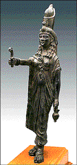

<!--This file created 10/16/97 5:55 PM by Claris Home Page version 2.0-->
<HTML>
<HEAD>
   <TITLE>Mpls Inst Arts - World Mythology: Isis</TITLE>
   <META NAME="GENERATOR" CONTENT="Claris Home Page 2.0">
   <X-SAS-WINDOW TOP="91" BOTTOM="480" LEFT="36" RIGHT="566">
<HEAD>
</HEAD>
<BODY TEXT="#111111" LINK="#660000" ALINK="#AA0000" VLINK="#444444" BACKGROUND="backgroundbrown.gif">

<P><FONT SIZE="+2">Curriculum Materials: World Mythology</FONT>
<HR>
<!--------Top Myth Menu------></CENTER><TABLE BORDER="3">
   <TR>
      <TD>
         <P><CENTER><A HREF="introduction.html#top">Introduction</A>
         ~ <A HREF="mythbyimage.html#top">Myth by Image</A> ~
         <A HREF="culturelist.html#top">Myth by Culture</A> ~
         <A HREF="myths.html#top">Mythological Comparisons</A> ~
         <A HREF="glossary.html#top">Glossary</A> ~
         <A HREF="suggestedreading.html#top">Suggested Readings</A> ~
         <A HREF="downloadables.html#top">Downloadable Resources</A>
         ~ <A HREF="../tta/classroom_materials_order.html">How to Order</A> ~
         <A HREF="myth_evaluation.html#top">Your Comments Wanted</A>
         ~ <A HREF="#Story">Story</A> ~
         <A HREF="#Background">Background</A> ~
         <A HREF="#Questions">Questions</A></CENTER>
      </TD></TR>
</TABLE>
<HR>
<BR>

<A NAME="top"></A>&nbsp;<TABLE BORDER="0" CELLSPACING="10" WIDTH="445">
   <TR>
      <TD>
         <P><A HREF="full_jpg/03.jpg"></A><BR>
         
         <B>Image 3</B><BR>
         
         <FONT SIZE="+2">Statuette of Isis</FONT><BR>
         
         Egypt<BR>
         
         1st century A.D.<BR>
         
         Bronze<BR>
         
         9 inches high<BR>
         
         The Morse Foundation 68.9.5<BR>
         
         <BR>
         
         
         <HR>
         </P>
         
         <P><CENTER><A NAME="Key"></A><B>Key Ideas</B></CENTER></P>
         
         <UL>
            <LI>Isis (EYE-sus) figures prominently in Egyptian
            mythology as a healer, a magician, and an exemplary wife
            and mother.
            
            <LI>During the age of the Roman Empire, the cult of Isis
            gained immense popularity not only in Egypt but also
            throughout the Mediterranean world.
            
            <LI>While the subject and pose of this statuette of Isis
            are Egyptian, the
            <A HREF="glossary.html#NATURALISTIC">NATURALISTIC</A>
            treatment of its form is characteristically Roman.
         </UL>
         
         <P>
         <HR>
         </P>
         
         <P><CENTER><A NAME="Story"></A><B>Story</B></CENTER></P>
         
         <P>Long, long ago the Egyptian sun god, Re (RAY), created
         virtually everything that existed in the world. Simply by
         speaking the name of something, Re created it. As he named
         birds, animals, and things, they appeared. Because Re made
         all things, he also controlled them. More powerful than
         anyone, he ruled both heaven and earth.</P>
         
         <P>&nbsp;</P>
         
         <P>Isis, a clever god gif ted in the arts of magic, envied
         Re's power. She desired to know Re's secret Great Name,
         because it was the key to his magic and would give her
         greater power. Isis spent a lot of time wondering how she
         could obtain Re's secret. As Re grew older and weaker, she
         devised a plot.</P>
         
         <P>&nbsp;</P>
         
         <P>Whenever Re drooled, the wily Isis gathered up his spit.
         Kneading the spit with soil, she created a serpent. Although
         the serpent came forth from Re, he had not created it, so it
         was outside of his control. Isis molded the serpent into the
         form of a dart and placed it on Re's daily walking path
         across the sky. When Re passed by, the serpent reared up and
         stung him.</P>
         
         <P>&nbsp;</P>
         
         <P>Soon, Re began to burn with the serpent's venom. He was
         baffled by the creature's behavior and dismayed to discover
         that he had no power over it. He could not cure his body of
         the terrible pain. Re called to his children for help, but
         they could not end his suffering.</P>
         
         <P>&nbsp;</P>
         
         <P>Then Isis came forth and offered to work her magic to end
         Re's pain. However, she insisted she could cure Re only if
         he revealed his secret Great Name. Re offered a variety of
         nicknames, but clever Isis was not fooled. Fearing for his
         life, Re finally gave in and transmitted the Great Name from
         his heart to Isis's. That is how Isis successfully learned
         the secret of Re's all-powerful magic.</P>
         
         <P>&nbsp;</P>
         
         <P>
         <HR>
         </P>
         
         <P><CENTER><A NAME="Background"></A><B>Background</B>
         </CENTER></P>
         
         <P><B>Isis</B><BR>
         
         According to a rich mythology surrounding the Egyptian
         goddess, Isis raised her husband, Osiris (oh-SIGH-rus), from
         the dead, protected her son, Horus (HOR-us), from a variety
         of certain deaths, and knew the secrets of immortality. She
         was faithful, intelligent, strong, and beautiful. Like
         Osiris, Isis was associated with vegetation and the cycles
         of the seasons and the Nile River. Ancient beliefs
         attributed the annual rainfall, which sustained the people
         of the Nile Valley, to the tears Isis shed for Osiris.<BR>
         
         <BR>
         
         <B>Romans in Egypt</B><BR>
         
         In the 1st century B.C., Egypt became a province of Rome
         under the leadership of Augustus. The Romans ruthlessly
         exacted money and resources from Egypt. The Roman rulers
         thrived at great expense to the conquered Egyptians. Over
         the centuries of Roman domination, people in Egypt and
         throughout the Mediterranean world sought hope and comfort
         through the worship of the traditional Egyptian gods whose
         mythology embraced a central belief in life after
         death--Osiris, Isis, and their son, Horus.</P>
         
         <P><B>&nbsp;</B></P>
         
         <P><B>Figures</B><BR>
         
         In Egypt, people regularly left small bronze figures of
         deities at temples or funereal sites in order to attract the
         deity represented. By offering a sculpture at a temple, one
         could pay homage to a god and hope to gain his or her favor
         and protection.</P>
         
         <P><B>Statuette of Isis</B><BR>
         
         This statuette of Isis dates to the 1st century A.D., when
         Rome ruled over Egypt; the artistic traditions of both
         cultures are evident in its design. Traditional
         <A HREF="glossary.html#ATTRIBUTE">ATTRIBUTES</A> identify
         Isis--her crown, serpent,
         <A HREF="glossary.html#AMULET">AMULET</A>, and jug. Her
         stiff stance is characteristically Egyptian. The sculpture's
         naturalism, however, is characteristic of Roman Imperial
         art; Isis's large eyes, broad upper lip, and rounded cheeks
         all give her face a portrait quality. Much of her gown is
         close-fitting, revealing the solidly rounded form of her
         breasts, stomach, and thighs. Her gown falls loosely over
         her legs in graceful and realistically fluid folds.</P>
         
         <P>&nbsp;</P>
         
         <P>Several aspects of the sculpture are symbolic attributes
         of Isis's identity and power. In her left hand Isis holds
         her magical dart-shaped serpent, a reference to the power
         gained from her knowledge of Re's secret name. In her right
         hand is a jug, presumably of sacred water, associated with
         accomplished magicians. Over a fabulous wig of cascading
         curls, Isis wears the combined crown of Upper and Lower
         Egypt, indicating her dominion over both. At the base of her
         crown a vulture wraps its wings around her head, symbolizing
         her protective powers. At her bust is a Tyt (tit) amulet,
         also known as an Isis-knot, a fertility
         <A HREF="glossary.html#SYMBOL">SYMBOL</A> and a reference to
         her life-giving powers.</P>
         
         <P>&nbsp;</P>
         
         <P>
         <HR>
         </P>
         
         <P><CENTER><A NAME="Questions"></A><B>Discussion
         Questions</B></CENTER></P>
         
         <P><B>Look</B><BR>
         
         <B>1.</B> This statuette includes two important features
         from the story of Isis. What are they? <B>(Isis and the
         serpent.)</B> Does the serpent look different from other
         snakes you have seen? How? <B>(Straight and stiff rather
         than curved and writhing.)</B> What part of Isis's story was
         the artist recalling when he made the serpent look straight
         and stiff? <B>(Isis molded the serpent into the form of a
         dart.)</B></P>
         
         <P><B>2.</B> How big do you think this sculpture is?
         <B>Discuss the sculpture's purpose: Egyptian people left
         small bronze figures like this one at temples or funeral
         sites to attract the deity the sculpture represented.
         </B>Now how big do you think it is? <B>Show an object of
         similar size to illustrate the size of this sculpture - nine
         inches high. </B> What clues to size does the title give
         you? <B>("Statu<I>ette</I>" has diminutive suffix.)</B></P>
         
         <P><B>3.</B> Isis was a very important figure in Egyptian
         mythology. She was known to the Egyptian people as a healer,
         magician, and exemplary wife and mother. <B>(See Osiris
         story, image 1.) </B>How does this sculpture show us that
         Isis is an important person? <B>(Crown or tall hat
         identifies rulers, deities, and/or important members of a
         community in many cultures.)</B></P>
         
         <P><B>4.</B> An
         <A HREF="glossary.html#ATTRIBUTE">ATTRIBUTE</A> is a
         distinctive symbolic feature that identifies a character.
         Identify Isis's attributes: a serpent <B>(left hand)</B>, a
         vulture <B>(wrapped around the base of Isis's crown)</B>, a
         jug of water <B>(right hand)</B>. What is an
         <A HREF="glossary.html#AMULET">AMULET</A>? (<B>An object or
         charm, usually worn as jewelry.)</B> Is Isis wearing one?
         <B>(Yes.)</B> Where? <B>(Around her neck.)</B></P>
         
         <P><B>5.</B> <B>Compare with the painting of Osiris (image
         1). </B> Both of these works of art are Egyptian, but their
         overall <A HREF="glossary.html#STYLE">STYLES</A> or design
         qualities are different. Name the stylistic differences
         between Osiris and Isis. Consider: facial features,
         treatment of bodies and garments, and media. (Osiris's face,
         shown in profile, is consistent with Egyptian formulas for
         representing people. Isis has natural features more
         consistent with portraiture and meant to be seen from many
         sides. Isis's body is a
         <A HREF="glossary.html#THREE-DIMENSIONAL">THREE-DIMENSIONAL</A>
         sculpture with rounded forms, Osiris's body is a
         <A HREF="glossary.html#TWO-DIMENSIONAL">TWO-DIMENSIONAL</A>
         painting with flat, straight outlines and angles. Isis's
         garments have
         <A HREF="glossary.html#NATURALISTIC">NATURALISTIC</A> and
         descriptive folds, Osiris's mummy garment has no folds or
         descriptive elements. The artist who painted Osiris used
         color, the artist who sculpted Isis did not.)</P>
         
         <P>
         <HR>
         <B>Think</B><BR>
         
         <B>1.</B> Isis tricked Re into revealing his secret name so
         that she could have Re's power. What do you think she did
         with that power? <B>(Recall Isis'
         <A HREF="glossary.html#ATTRIBUTE">ATTRIBUTES</A> and their
         symbolic meaning.)</B> Do Isis's attributes give you any
         clues? <B>(Dart-shaped serpent a reference to the power Isis
         gained from Re, vulture on crown symbolizes protective
         powers, Tyt AMULET a reference to her life-giving
         powers.)</B> <B>See also Story section of Osiris, image
         1.</B></P>
         
         <P><B>2.</B> <B>Discuss with students the Roman occupation
         and rule of Egypt at the time this statuette was made.</B> A
         <A HREF="glossary.html#SYMBOL">SYMBOL</A> is something that
         stands for or represents another thing or idea. What did
         Isis represent for the Egyptian people at the time this
         statuette was made? <B>(Egyptian people looked to
         traditional deities like Isis as a symbol of hope during
         Roman domination.)</B></P>
         
         <P><B>3.</B> Isis was a superhero to the ancient Egyptian
         people. A superhero is a hero who takes human form but
         possesses supernatural powers. Can you think of any women
         who are superheroes today? <B>(Super Woman. Bat Girl. The
         Bionic Woman. She-Ra Princess of Power. Wonder Woman.)</B>
         </P>
         
         <P><B>4.</B> Egyptian works of art you have studied in the
         World Mythology in Art image set all include
         <A HREF="glossary.html#ATTRIBUTE">ATTRIBUTES</A> of the gods
         they represent. <B>Review Osiris, Thoth, and Isis. </B>Why
         did the Egyptian artists use attributes when they depicted
         these gods? <B>(To identify the gods. Without attributes,
         they all look the same.
         <A HREF="glossary.html#FORMULAIC">FORMULAIC</A> Egyptian
         style makes no attempt at portraiture.)</B></P>
         
         <P><!--------Bottom Myth Menu------>
         <HR>
      
      </TD></TR>
</TABLE> <TABLE BORDER="3">
   <TR>
      <TD>
         <P><CENTER><A HREF="introduction.html#top">Introduction</A>
         ~ <A HREF="mythbyimage.html#top">Myth by Image</A> ~
         <A HREF="culturelist.html#top">Myth by Culture</A> ~
         <A HREF="myths.html#top">Mythological Comparisons</A> ~
         <A HREF="glossary.html#top">Glossary</A> ~
         <A HREF="suggestedreading.html#top">Suggested Readings</A> ~
         <A HREF="downloadables.html#top">Downloadable Resources</A>
         ~ <A HREF="../tta/classroom_materials_order.html">How to Order</A> ~
         <A HREF="myth_evaluation.html#top">Your Comments Wanted</A>
         ~ <A HREF="#Story">Story</A> ~
         <A HREF="#Background">Background</A> ~
         <A HREF="#Questions">Questions</A></CENTER>
      </TD></TR>
</TABLE></P>
</BODY>
</HTML>
